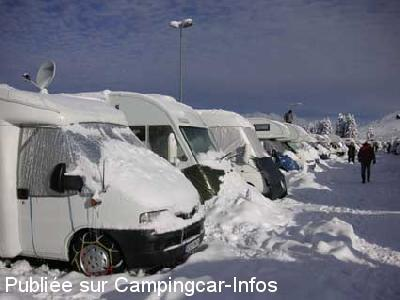
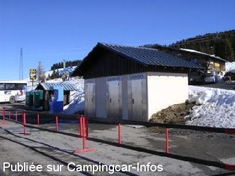
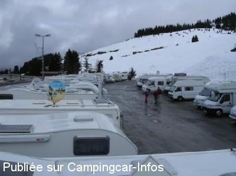
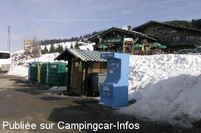

ASN = Aire de services avec stationnement nuit possible de :
HAUTELUCE Col des Saisies
(N° 616)
Accès/adresse :
Aire N°1, D218b
73270 HAUTELUCE Col des Saisies
73270 HAUTELUCE Col des Saisies
Latitude : (Nord) 45.76297° Décimaux ou 45° 45′ 46′′
Longitude : (Est) 6.53382° Décimaux ou 6° 32′ 1′′
Tarif : 2015
Stationnement : 8 €
Services : 2 €
Type de borne : FLOT BLEU
Services :


Tous commerces
Autres informations :
Ouvert toute l'année
Le petit parking à gauche au rond-point en montant de Bellecombe est le seul autorisé aux C-C
Tél : +33(0)479 389 517
Attention de ne pas stationner sur le parking des autocars 35 € d'amende...

Le 07/03/2008 par famillepinet

Le 04/03/2008 par David et Cécile 02

Le 04/03/2008 par David et Cécile

Le 28/02/2007 par FAROME 76
de
Jean-Bernard Boschung (iron)
le 31/10/2015 :
Bonsoir,
Nous avons passé notre première nuit le 19/10/15 (brouillard) et notre dernière nuit le 29/10/15 (neige et pluie) sur cette aire.
Nous étions tout seul, et l'aire était gratuite (horodateur baché).
Calme la nuit et même au petit matin, vu la période.
Salutations
Bonsoir,
Nous avons passé notre première nuit le 19/10/15 (brouillard) et notre dernière nuit le 29/10/15 (neige et pluie) sur cette aire.
Nous étions tout seul, et l'aire était gratuite (horodateur baché).
Calme la nuit et même au petit matin, vu la période.
Salutations
de
Gileve
le 20/08/2013 :
§ Aout 2013- Aire toujours à 8€ sans grand intérêt mais calme la nuit
§ Aout 2013- Aire toujours à 8€ sans grand intérêt mais calme la nuit
de
balibalo
le 02/08/2011 :
§
MAINTENAN c est 8 euro pour un parking sans charmes et bruyant
a noter les service en sus! il n y as pas de grille de vidange au sol!!!!! pas du tout pratique
§
MAINTENAN c est 8 euro pour un parking sans charmes et bruyant
a noter les service en sus! il n y as pas de grille de vidange au sol!!!!! pas du tout pratique